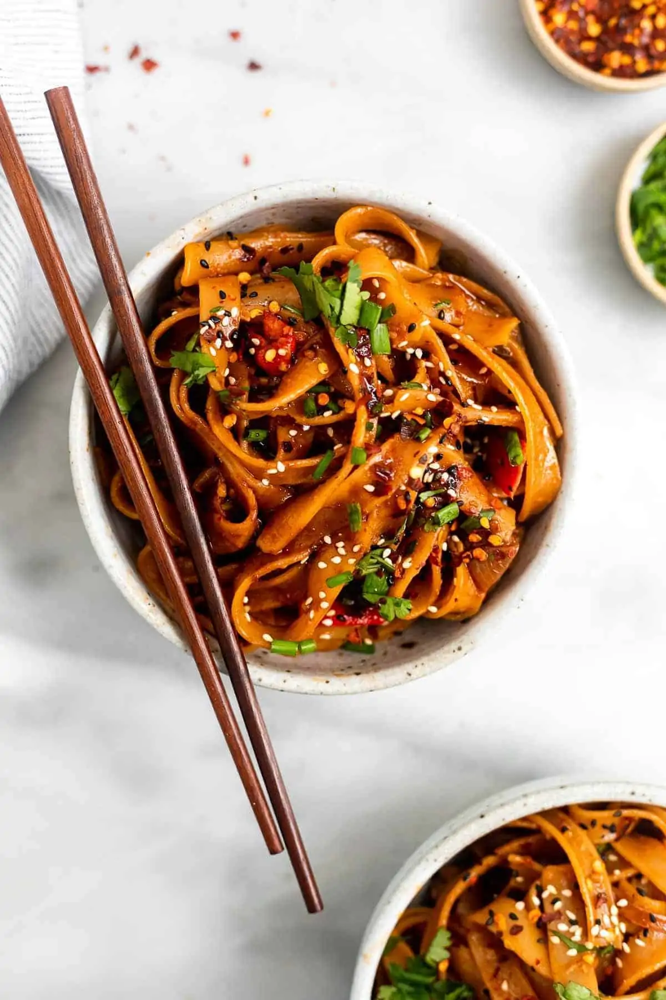

Chilli Garlic Noodles

Description
Chilli garlic noodles are full of flavors and make for a great meal on their own or paired with Asian-style curries like Vegetables in Hot Garlic Sauce, Thai Basil Chicken, or Sweet And Sour Vegetables. The good part is that making these spicy Chili Garlic Noodles at home is super easy. They come together in under 30 minutes using simple ingredients. You can also adjust the spice level according to your taste. If you don‘t like them too spicy, you can decrease the amount of red chili paste, especially if you are making it for your kids.
Ingredients
- Noodles
- Shallots or onions
- Garlic
- Soy sauce
- Sesame seeds
- Green onion
- Ginger
- Oil
- Sriracha
- Sugar
Steps
- Bring a large pot of water to a boil and cook noodles according to package instructions.
- Add the shallot and garlic to a pot and saute with the oil until browned, about 5 minutes. Add the white part of the scallions and the grated ginger and saute for 2-3 more minutes.
- Pour in all remaining sauce ingredients and whisk together. Start on the low end of the recommended amounts of sriracha and chili sauce (1 tbsp or less for each).
- When the noodles are done cooking, combine with the sauce and diced roasted pepper and toss until well coated. taste and adjust flavors as desired.
- Serve as is or with any other vegetables or protein of choice. I love adding in bok choy, carrot or cabbage with chicken or tofu.